附录 F
实验环境与阅读路线
先知道证据在哪些条件下成立，再选择能达成学习目标的阅读顺序。
F.1 可复查的主环境
本书主环境为Java开发工具包（Java Development Kit，JDK）25.0.5.0.2、OpenJDK HotSpot、macOS AArch64。下表来自公共基线和各阶段真实记录，不把这台机器作为所有平台的默认条件。
| 项目 | 实际记录／限制 | 入口 |
|---|---|---|
| 主机 | macOS27.2，Apple M1 Pro，8逻辑核、16吉比字节（gibibyte，GiB）内存；release/server。 | 第2章 |
| 工具选择 | Homebrew25.0.5.0.2，Maven3.10.0；系统java_home登记的旧安装不能代替指定路径。 | CH04命令 |
| 实现身份 | jdk25u，标签jdk-25.0.5.0.2-ga，提交1775ea114f649f0314e4e43eb6c802ff16dfab7c；外部稀疏检出。 | 附录D |
| 发行版差异 | 配方对构建及系统库有适配；上游源码关系有证据，但不声明整个二进制逐字对应。 | 基线差异 |
| 本地工具 | Apple clang21.0.0、lldb2103.0.34.407；本地库按目标头和调用约定构建。 | CH32命令 |
| 布局工具 | Java Object Layout（JOL）固定源码db2cc744，本地坐标0.18-db2cc744；旧状态解码边界披露。 | CH10依据 |
| 记录分析 | JDK Mission Control（JMC）9.1.2以25版运行，已阅读随书事件；规则评分不代替因果。 | 第34章 |
| 出版工具 | Chrome156.0.8078.80；Shiki4.6.0、github-light；Mermaid12.2.0。读者无需安装作者工具。 | 高亮生成说明 |
F.2 构建、运行与平台条件
从项目根目录按相应章运行说明选择同一JDK；普通Maven聚合只编译教学源码，不自动启动进程。含第10章的构建先安装随书固定布局工具。预览、本地库、代理、共享归档与微基准各有独立入口，不通过全局启用来掩盖条件。
| 范围 | 实际情况 | 保留的限制／后续条件 |
|---|---|---|
| macOS AArch64 | 本书正常教学、收集器、诊断及有限案例的真实主环境。 | 有限运行不证明并发正确性，也不构成长期稳定性能保证。 |
| x86-64 | 同提交调用约定、匹配及输出规则对照。 | 没有真实执行；第17章按源码对照解释，实机复核仍待补充。 |
| Linux与容器 | 第35／36章采用官方历史案例、固定源码及本机账本对照。 | 没有本机Linux容器运行、容器终止或处理器时间画像实测；补充环境仍需另行取得。 |
| 诊断构建／反汇编 | release下PrintIdeal被拒；原始机器字节与本机解码记录保留。 | 未准备fastdebug／slowdebug，机制图不是工具原图，未安装hsdis。 |
| 故障与基准 | 本书收录的有界案例及第36章有限对照。 | 未覆盖无限压力、主动本地崩溃；无改善结果仍保留。 |
| 静态书稿 | 超文本标记语言（Hypertext Markup Language，HTML）、样式、图与代码词元本地保存。 | 章节阅读与本次出版不替代全书目录迁移和断网最终验收。 |
运行记录包含命令、输入摘要、开始／退出与原始输出；正文摘要不是原始证据的替代。大型飞行记录、转储与临时出版文件在artifacts，精选证据及获取索引在各章evidence。复制书稿时保留相对目录，重新编译平台相关本地库和缓存，不搬旧地址、进程号或共享文件到其他环境。
F.3 三条有前置的阅读路线

| 路线 | 前置与顺序 | 读完应能做什么 |
|---|---|---|
| 原理入门 | 第1章—第3章 → 第4章—第12章 → 第19章—第20章 → 第25章 | 解释类文件到类型、对象、线程的变化；区分规范区域、实现布局和系统驻留；能说清构造与发布。 |
| 源码进阶 | 先完成原理基础，再读第13章—第18章 → 第21章—第24章 → 第26章—第32章；用附录D定位。 | 沿问题进入共享、机器及系统路径；把优化假设、回收屏障与并发语义分开；核对预览和本地边界。 |
| 故障分析 | 先理解第9章—第12章、第16章—第20章及第25章—第28章，再读第33章 → 第34章 → 第35章 → 第36章。 | 先定义问题与时间窗，再收最小证据；在收益、代价和适用条件中作有限结论，不靠一条日志下因果判断。 |
若从实际问题开始，可先读第35章对应故障入口，但必须沿回链补齐持有关系、采样口径和线程机制。复用既有记录可以练习推理；运行主动故障和基准前，请按章节说明确认隔离与停止条件。
证据入口与接续
各篇完成依据保留在执行记录/evidence/p03至p09的完成或阶段记录；章节TASK分别维护实际分项。本附录仅汇编已知范围，全书最终验收另需核对迁移、离线与交付清单。原始来源访问限制与实测范围随记录保留，不用本附录把未实测平台改成通过。